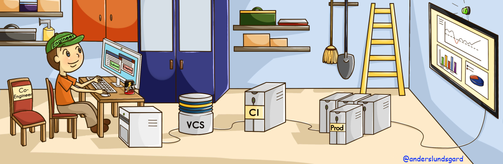

What is CD?
Continuous Delivery (CD) is about the ability to be Agile in the extreme. Time between code is passed into the version
control system (VCS) to be deployed into production that is not years, months or weeks. At best, it is not even days
but rather it is in hours or minutes.
At first glance CD may seem dangerous and unreachable. But the fact is that big companies
like Facebook, Google and Etsy have been doing CD for many years, so it is absolutely doable for small businesses, as well as
for large ones.
Achieving CD eliminates the biggest problems with waterfall projects.
- Inability to change direction (being agile)
- Long QA feedback loop
- Lack of collaboration

1. In projects doing CD the engineer submits code and tests into VCS. The code has been tested locally and also
reviewed by a co-engineer. Note the submitter is not called a developer because it could just as well be a person
with special skills in testing or management.
2. The Continuous Integration (CI) server triggers a series of automated builds, tests and deploys. This process
is often referred to as the Deployment Pipeline. Automation is the key. No manual fingers do anything...
all the way to the production deploy. This automation is cheap so it will constantly be executed for all of the related changes
being made into the VCS.
3. The engineer loves what she is doing. She wants her users to be happy. So a very crucial part of her work is monitoring the
production servers. If a daily deploy seems to change any of the normal metrics like page loads, network traffic or cpu-usage, the engineer
will act on that.
Notice
The above things absolutely cannot be done without the proper safety measures.
For information on those practices please read
How to do CD?